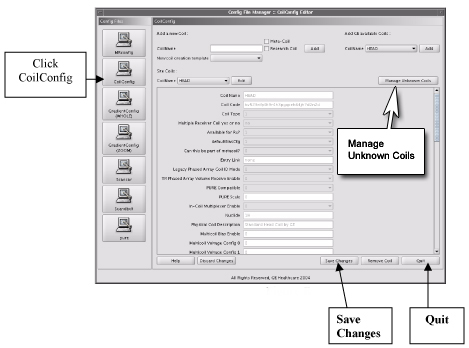
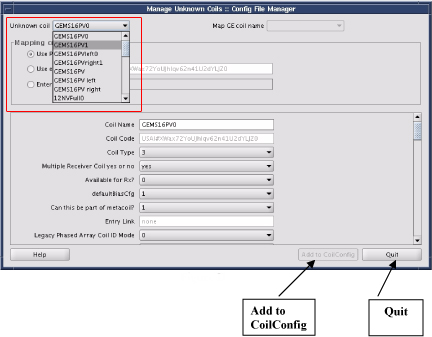
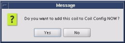

Operating Documentation
Direction 5440000, Rev# 5
Signa HDxt Service Methods
Module Version 2.0, Version Date 11/30/07
Operating Documentation |
| Required Persons | Preliminary Reqs | Procedure | Finalization |
|---|---|---|---|
| 1 | Not Applicable | 30 mins | Not Applicable |
Each surface coil is supplied with a configuration data sheet that will be used to help configure the coil. There is also online help available at the bottom of the main coil configuration window that will guide the Field Engineer through each data field in the coil configuration process.
| Last Update | 11/30/2007 |
| ||||
Read the following for information when upgrading your system.
| ||||
Launch the Common Service Desktop shown in Illustration 1.
Illustration 1: Start Config File Manager

Click [CoilConfig] on the left side of Config File Manager (shown in Illustration 2), and click [Manage Unknown Coils] .
Illustration 2: CoilConfig

Click the Unknown Coil pull-down shown in Illustration 3. The system will display the list of unknown coils as shown in Illustration 4.
Illustration 3: Unknown Coil Options

Illustration 4: Unknown Coil List

Select the coil to be configured from the pull-down shown in Illustration 4.
Select or Insert the ID from the coil manufacturer in the Mapping criteria section of theManaging Unknown Coils window. (See Illustration 3.)
| NOTE: | The data fields in the lower portion of the window will auto fill. If the [Map GE Coil name] selection list becomes active, click on the selection list and choose the right GE coilname from the list. If [Map GE Coil name] remains inactive, review the values that are auto-filled in the lower portion of the window, making sure there are no empty fields. |
If this is an unknown coil to GE that does not show up in the list, select [Use Parameters] shown in Illustration 2. (The coil manufacturer will need to provide the necessary information for each data field, which should be provided in the documentation provided by the coil manufacturer.)
| NOTE: | Some non-GE coils have coil IDs that are recognized by the system. In this case, select or insert the coil ID, (see Step 4). |
When finished, click [Add to CoilConfig] shown in Illustration 4.
When a message box displays with, Do you want to add this coil to Coil Config NOW?, click [Yes], (see Illustration 5).
Illustration 5: Message Box to Confirm Adding Coil Config

When finished adding coils, click [Quit] in the bottom right corner of the Manage Unknown Coils page, (see Illustration 4).
Click [Save Changes] in the bottom right corner of the CoilConfigmain page, (see Illustration 2).
Click [Quit] in the bottom right corner of the CoilConfig main page shown in Illustration 2.
Reboot the software by right-clicking the mouse in a background window, and select Service Tools ⇒ System Restart, and click [Yes].
Log back in when prompted with: Username: sdc Password: adw2.0.
To verify the system recognizes the coil, perform a quick scan for all unknown coils without using geservice as the Patient ID.
Refer to the Functional Checks in the documentation supplied with the coil.
Ensure it is working correctly.